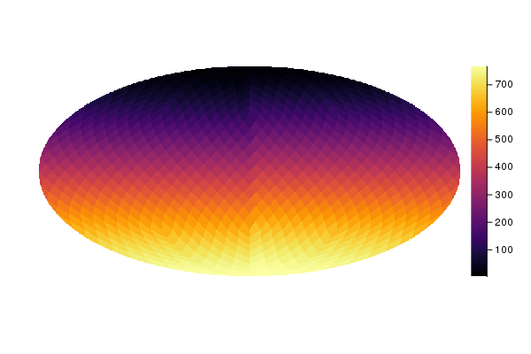

Visualization functions
Healpix.jl uses RecipesBase to display maps. You need to import Plots in order to display maps, using the plot functions. Maps are internally treated as heatmaps, so your backend should support this kind of visualization: at the moment, this is true for GR, PlotLy and PyPlot.
using Healpix
using Plots
gr() # Use the GR backend
nside = 8
m = Map{Float64, RingOrder}(nside)
m.pixels[:] = 1:length(m.pixels)
plot(m)
savefig(joinpath("images", "mollweide.png")) # hide
A call to plot can provide two additional arguments:
- A carthographic projection (see below).
- A dictionary containing parameters to be used by the carthographic projection.
The following example displays the same map in orthographic coordinates:
plot(m, orthographic)
savefig(joinpath("images", "orthographic.png")) # hide
Cartographic projections
Plotting is based on project, which takes a map as input and produces a 2-D bitmap containing a representation of the map suitable to be shown using Plots.
Although the easiest way to plot a map is to use plot, project might be suitable in those cases where you are just interested in a 2D bitmap. It requires a inverse projection function (mapping the 2D plane to a point on the sphere) and the size of the bitmap, and it returns three values:
A 2-D bitmap containing the color level of each pixel. Unseen pixels (e.g., those falling outside the ellipse in a Mollweide projection) are marked as
NaN, as well as unseen pixels;A 2-D bitmap of
Boolvalues, telling which pixels in the map are masked, i.e., they are marked asUNSEEN,NaNormissingin the Healpix map;A
Boolflag telling if there is any masked value in the mask (2nd return value, see above). This parameter is returned to optimize calls toplot, but it is obviously redundant.
Consider this example:
using Healpix
m = Map{Float64, RingOrder}(1)
# Plot the map on a 20×20 bitmap using an
# equirectangular projection
image, mask, maskflag = project(equiprojinv, m, 20, 20)(Float32[0.0 0.0 … 0.0 0.0; 0.0 0.0 … 0.0 0.0; … ; 0.0 0.0 … 0.0 0.0; 0.0 0.0 … 0.0 0.0], Bool[false false … false false; false false … false false; … ; false false … false false; false false … false false], false)A number of parameters can be passed to project, in order to taylor the representation. They must not be passed as keyword arguments, because this would clash with the way plot recipes work; instead, you must use a dictionary:
# Return a 2-D bitmap of 16-bit floating-point values
image, _, _ = project(equiprojinv, m, 20, 20,
Dict(:desttype => Float16))(Float16[0.0 0.0 … 0.0 0.0; 0.0 0.0 … 0.0 0.0; … ; 0.0 0.0 … 0.0 0.0; 0.0 0.0 … 0.0 0.0], Bool[false false … false false; false false … false false; … ; false false … false false; false false … false false], false)The following dictionary keys are available:
:desttype: type used for the pixels in the 2-D bitmap returned byproject. Default isFloat32;:unseen: the value marking pixels as unseen, i.e., masked. The default is-1.6375e+30, to preserve compatibility with other Healpix libraries.:center: currently this is used only with orthographic projections. It specifies the coordinates of the center of the image (colatitude and longitude, both in radians).
Healpix.project — Function.project(invprojfn, m::Map{T, O}, bmpwidth, bmpheight; kwargs...) where {T <: Number, O <: Order}Return a 2D bitmap (array) containing a cartographic projection of the map and a 2D bitmap containing a boolean mask. The size of the bitmap is bmpwidth×bmpheight pixels. The function projfn must be a function which accepts as input two parameters x and y (numbers between -1 and 1).
The following keywords can be used in the call:
center: 2-tuple specifying the location (colatitude, longitude) of the sky point that is to be placed in the middle of the image (in radians)unseen: by default, Healpix maps use the value -1.6375e+30 to mark unseen pixels. You can specify a different value using this keyword. This should not be used in common applications.
Return a Array{Union{Missing, Float32}} containing the intensity of each pixel. Pixels falling outside the projection are marked as NaN, and unseen pixels are marked as missing.
Projection functions
Functions mollweide, equirectangular, and orthographic can be passed as parameters to plot.
Healpix.mollweide — Function.mollweide(m::Map{T,O}; kwargs...) where {T <: Number, O <: Order}High-level wrapper around project for Mollweide projections.
Healpix.equirectangular — Function.equirectangular(m::Map{T,O}; kwargs...) where {T <: Number, O <: Order}High-level wrapper around project for equirectangular projections.
Healpix.orthographic — Function.orthographic(m::Map{T,O}, ϕ0, λ0; kwargs...) where {T <: Number, O <: Order}High-level wrapper around project for orthographic projections centered around the point (ϕ0, λ0).
They are based on inverse projection functions, i.e., functions that take a
Healpix.mollweideprojinv — Function.function mollweideprojinv(x, y)Inverse Mollweide projection. Given a point (x, y) on the plane, with x ∈ [-1, 1], y ∈ [-1, 1], return a 3-tuple of type (Bool, Number, Number). The boolean specifies if (x, y) falls within the map (true) or not (false), the second and third arguments are the latitude and longitude in radians.
Healpix.equiprojinv — Function.function equiprojinv(x, y)Inverse equirectangular projection. Given a point (x, y) on the plane [-1, 1] × [-1, 1], return a tuple (Bool, Number, Number) where the first Boolean is a flag telling if the point falls within the projection (true) or not (false), and the two numbers are the latitude and colatitude in radians.
Healpix.orthoinv — Function.function orthoinv(x, y, ϕ1, λ0)Inverse orthographic projection centered on (ϕ1, λ0). Given a point (x, y) on the plane, with x ∈ [-1, 1], y ∈ [-1, 1], return a 3-tuple of type (Bool, Number, Number). The boolean specifies if (x, y) falls within the map (true) or not (false), the second and third arguments are the latitude and longitude in radians.